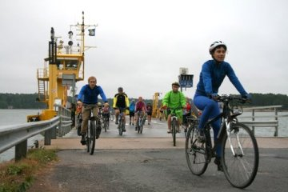
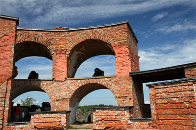
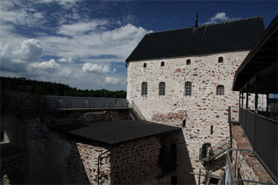
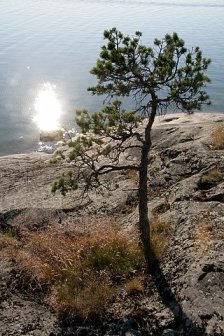
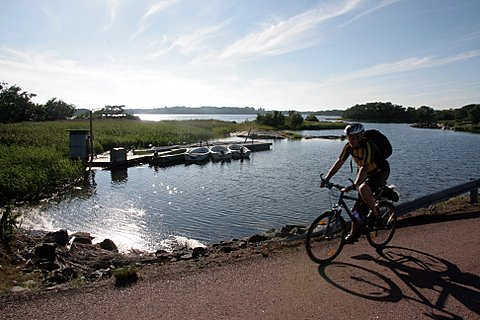

Эта версия похода по Аландам с круизом из Стокгольма и визитом в Таллинн!
Поход пройдет в основном по тихим дорожкам на островах Аландского архипелага и по шведской глубинке. Между островами курсируют паромы, а некоторые из них соединены мостами и дамбами, так что за время путешествия мы побываем почти на сотне островов. Дневные пробеги - небольшие, что позволяет участвовать не очень подготовленным людям. Вместе с тем, у сильных велосипедистов будет, как правило, возможность закрутить дополнительную петлю и удовлетворить свои спортивные амбиции.
Ночлеги организованы в "хостелах" (pansionats / youth hostels) и коттеджах (cottages / cabins). Размеры комнат и коттеджей могут различаться. Душ есть везде, но удобства во многих местах общие. При этом чистота, опрятность и уют неизменны. Часто к нашим услугах будет сауна, временами, с возможностью выпрыгнуть из нее в освежающие балтийские воды.
На маршруте будет что посмотреть: Турку или Наантали,
Уппсала, Мариехамн, Стокгольм, Таллинн. Интересно отметить, что нам встретятся достопримечательности
не только финского или шведского происхождения, но и российского! Ведь
Аландский архипелаг вплоть до 1917 года принадлежал России, о чем свидетельствуют
руины крепости Бомарсунд, которые мы посетим. Но самое впечатляющее -
это удивительная и разнообразная природа архипелага: уходящие в воду скалы,
полные цветов леса, обилие водоплавающих птиц, и, конечно, вода повсюду: открытые
морские пространства, заливы, бухточки, фьорды, проливы, шхеры…. Можно
провести некоторые аналогии со шхерами Ладоги, но масштаб иной. Особенностью
движения по островным дорогам является минимальное количество транспорта;
время от времени проходит десяток машин с очередного парома, и дорога
снова пустеет.
Группу будет сопровождать гид и машина сопровождения, где будет ехать
багаж, аптечка, еда на перекусы и ремнабор. Таким образом, участники
поедут практически налегке.
Паромы - это отдельный рассказ. Мы побываем на самых разных: от небольших корабликов, которые "подбросят нас" буквально на пару километров (правильнее сказать - на пару миль, дело-то - морское!), до больших многопалубных судов со "шведским столом".
Финал маршрута - Стокгольм, город в котором "есть что посмотреть", и "суперфинал маршрута" - паром Стокгольм - Таллинн (где мы проведем несколько часов) - Петербург. Огромное многопалубное судно с ресторанами и сауной, магазинами Такс Фри и игровыми зонами.
День 1: Питер –Turku (Naantali). 600 км. Не стоит пугаться - это на автобусе.
Первый день путешествия - традиционно самый трудный. Ранним утром мы
грузимся на автобус и отправляемся в Турку. Оставив позади сонные улицы
средневекового Выборга, мы приедем на погран переход Торфяновка. Здесь,
возможно, нам придется подождать: из пяти миллионов петербуржцев мы,
вероятно, будем не одиноки в желании провести отпуск в Скандинавии. К
вечеру мы приедем в район Турку - Наантали, где разместимся в
гостинице, и пойдем гулять - осматривать достопримечательности.
День 2: Kustavi - Brando. 45 км + 2 парома
Утром мы собираем велосипеды, и отправляемся в путь. Сначала мы поедем
по островам, но не Аландским. Островам, которые расположились вдоль
берега Финляндии. Затем, нас ждет первый морской переход на теплоходе
Вигген, Это довольно большой паром с уютным салоном, кафе и прочими
благами цивилизации. Однако наше путешествие на Виггене недолгое -
через 40 минут нам предстоит первая встреча с Аландским архипелагом: мы
высадимся на северной оконечности Брэнде, удивительно красивой цепи
небольших островов. Округлые гранитные глыбы поднимаются из воды.
Мягкий мох покрывает камень. Повсюду растут можжевеловые кусты,
настолько густые и стройные, что напоминают искусственные украшения. С
другой стороны, во многих местах из-за недостатка почвы сосны вырастают
невысокими и скрюченными, и напоминают сосны в заполярной тундре.
Иногда дорога идет через лес, иногда нас окружает гранитное плато с
редкой низкорослой растительностью.
Езда доставляет исключительное удовольствие: изумительная природа, хорошее покрытие, почти полное отсутствие людей и машин (на 1000 островах Брэнде живут 525 человек). Получается по два острова на человека. На одном из них мы и заночуем в коттеджиках.
День 3. Brando - Kumlinge - Bomarsund. 40 км
Наше следующее морское путешествие, из Брэнде в Кумлинге, займет около часа. Будет время полюбоваться морскими пейзажами, обследовать паром, перекусить, и даже вздремнуть. Кумлинге - это местная глухомань. В самом деле, два острова Кумлинге и Эклинге с незначительным населением в несколько десятков человек, отделены от других населенных островов архипелага часовыми переходами на пароме.
Далее мы сядем на паром и доберемся до коммуны Ворде.
Ворде - это тоже тихая сельская община, хотя она и примыкает к главному Аландскому острову. Здесь, на прибрежных скалах гнездится множество птиц. Отметим, что одно из направлений туризма на Аланды - это " birdwatching " - специализированные путешествия для наблюдения за птицами. Пропустив вперед машины с нашего парома, мы продолжаем путь по уже свободной от транспорта дороге, проезжаем оригинальную старую церковь. Оставив позади лесистые холмы Ворде, мы по высокому мосту пересекаем один пролив, на пароме переправляемся через другой и, наконец, оказываемся на главном Аландском острове.
На большом острове нас ждут достопримечательности. Первая из них - это русская крепости Бомарсунд. Россия владела Аландскими островами с 1809 по 1917 год. Крепость была построена в начале 19 века и разрушена англо-французским флотом в 1854 году, в период Крымской войны. Именно после этой войны, по Парижскому миру, острова обрели сохраняемый до сего дня (с небольшими перерывами, однако) демилитаризованный статус: на них не могут размещаться вооруженные силы, и они не могут быть атакованы.
Сегодня Аланды принадлежат Финляндии и говорят по-шведски; это автономная самоуправляемая провинция, представленная и в Финляндском парламенте, и в Совете Северных Стран. Аланды имеют свой флаг и печатают свои почтовые марки. Кстати, о марках - они довольно редки, а потому можно воспользоваться случаем и порадовать открыткой друзей- филателистов. Если спуститься с небес на землю, то можно обратить внимание на то, что сауна в нашем кемпинге теснится у самой воды. Большинство парильщиков в нее падает!

День 4. Bomarsund - Мариехамн. 55 км
В этот день мы едем по Большому Аланду. Наша следующая остановка - Кастельхольм, впечатляющий замок 17 века. Рядом с ним - этнографический музей под открытым небом, сюда со всей округи свезены старые дома, амбары, ветряные и водяные мельницы, бани и т.п. Интерьер представляет жизнь Аландов в 19 веке.Даже главные дороги на Аландах не отличаются обилием транспорта. Тем не менее, в некоторых местах параллельно им оборудованы велодорожки, в основном же вело маршрут проходит по второстепенным дорогам. К вечеру мы прибываем в столицу Аландского архипелага, город Мариехамн, основанный русскими и названный в честь императрицы. В качестве культурной программы можем адресовать вас в музей, или на Барк "Поммерн", а для тела есть возможность заглянуть в аквапарк. Вечером можно посидеть в одном из ресторанчиков на берегу моря. Некоторые рестораны - плавучие, и находятся на старинных кораблях.
День 5. Мариехамн - Эккеро - Бергби (Швеция). 55 км
За день мы пересечем основной Аландский остров с востока на запад. Вечером садимся на довольно большой паром, который унесет нас в другую страну, в Швецию. Ночевать будем рядом с настоящим фьордом (узким морским проливом) в шведском кемпинге в деревянных избушках. Островная жизнь заканчивается, начинается "континентальная". Еще заканчиваются... старинные владения России! Да, поверить сложно, но Аландские острова были частью России, в Эккеро даже сохранилось здание старой царской таможни.
День 6: Bergby - Uppsala. 85 км.
Сегодня путешествуем по континенту. Едем через прибрежные рыбачьи
поселки, через пролив, мимо построенной в 1300 году церкви в Хявере,
через леса и мелкие деревеньки - на запад, в Уппсалу. Там нас ожидает
очередная порция достопримечательностей: королевский замок, древний
университет, средневековые соборы и узкие улочки. Уппсала - религиозная
столица Швеции. Здесь живет и трудится местный шведский архиепископ.
Километраж сегодняшнего дня довольно большой. Но у нас на маршруте есть машина сопровождения. Если что - можно несколько километров подброситься, сократив километраж.
День 7: Uppsala - Stockholm 82 км.
Одно из имен, прославивших университет Уппсалы - Карл Линней. Мы
выезжаем из города мимо его летнего особняка и продолжаем путь к югу по
тихим лесным дорожкам. Однако приближение столицы постепенно
сказывается. Вдоль дороги попадается все больше поселков, усадеб и
ферм. Неожиданно часто мы видим конюшни и ипподромы. Последние 30 км мы
едем по вполне урбанизованной территории. От дорог с большим трафиком
нас спасают велодорожки, по которым мы и въезжаем в центр города.
Вечером Стокгольм ваш!
День 8: В Стокгольме, вечером отплытие на пароме Принцесса Анастасия в Таллинн - Петербург.
Стокгольм
- очень красивый и своеобразный город, полный пространства и воды. Он
стоит у места впадения озера Мэларен в море, а точнее во фьорд.
Береговая линия изрезанная, гранитные уступы и холмы окружают воду,
создавая прекрасные обзорные точки. С этих точек есть на что
посмотреть: средневековый Старый город на острове, обширные кварталы
"северного модерна", водные просторы, пересекаемые многочисленными
теплоходиками. Другое сильное впечатление - обилие в городе скульптуры,
иногда изящной, иногда немного шокирующей; а также оригинальная
архитектура некоторых соборов и городской ратуши, знаменитой тем, что в
ней вручаются Нобелевские премии. Запоминается также и смена караула у
королевского дворца, полуторачасовое представление с участием десятков
всадников (собственно караула и военного оркестра). Многих привлекают
стокгольмские музеи, Космонова - симбиоз планетария и суперсовременного
кинотеатра, а также зоопарк - один из лучших в Европе. Лично мое
предпочтение - "музей Васи". Нет, Вася это не турист из России. Вася -
это старинный шведский деревянный военный корабль, поднятый со дна моря
и превращенный в музей. Настоящее имя, конечно, шведское, но уж больно
созвучное с "просто Вася". Корабль отлично сохранился, так как затонул
во время своего первого рейса, пройдя буквально с десяток миль от
пристани.
Утром мы еще осматриваем Стокгольм, а вечером садимся на паром, который идет в Санкт-Петербург, а по пути заходит в столицу Эстонии. Мы покидаем Стокгольм в 20-00.
День 9. Таллинн.
Утром в 11-30 мы в Таллинне. Паром швартуется в самом центре города.
От терминала до городских стен порядка 500 метров. До отплытия на
Родину в 18-00 у нас есть 6 с половиной часов. Этого вполне хватит,
чтобы побродить по Таллинну. Возможно я покажусь слишком резким, но
Таллинн на мой взгляд, самая красивая Балтийская столица. Здесь есть
что посмотреть.
.
День 10. Прибытие в Санкт-Петербург.

NB. Данное описание - это план велопутешествия. Организаторы сохраняют за собой право на его изменение в зависимости от конкретной ситуации.
Стоимость участия в велопоходе указана на странице календарь + стоимость Шенгенской визы и страховки.
В стоимость входят: весь транспорт, проживание, машина сопровождения, питание - перекусы-пикники в пути, завтраки и ужины (кроме обедов-ужинов в Стокгольме, на пароме и ужина в Уппсала). На круиз Стокгольм - Таллинн - Петербург мы заказываем 4х каюты (они входят в стоимость), но при Вашем желании, можно доплатить за двухместное размещение. Размер доплаты составит 40 евро на человека.
В стоимость не входит плата за посещение музеев и других "платных мест", какие либо алкогольные напитки, и не указанное выше питание.
{/block}